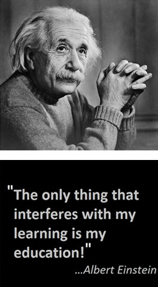

|  |
|
UniLrn: Education Empowered. (22 Jan 2013). Learning vs. Education. [Photograph]. Retrieved from: http://unilrn.com/learning-vs-education/ |
When he was six years old, Einstein was enrolled in the Petersschule on Blumenstrasse, a Catholic school in Munich; despite being Jewish, Einstein's family were not practicing Jews and so were not picky about the school's opposing religion. But Einstein's scientific, probing, inquisitive young spirit felt constrained by the atmosphere of "absolute obedience" and "military drills" that ruled school life.
Four years later, Einstein studied at Luitpold Gymnasium, a prominent school that stressed classical languages over mathematics and science. Now thoroughly unhappy with the educational system, Einstein decided to self-study outside school. Fueling his interest in science, his uncle sent him algebra and puzzle books, and another friend of the family sent him science and philosophy books - all which he hungrily devoured.
Now a young man, Einstein wished to escape the military drafting and school regimentation that threatened to change the course of his life. As a result, he convinced his doctor to excuse him from school. Finally free, Einstein journeyed to Italy to his parents. His arrival disappointed them, but the young Einstein assured them he would be attending the Federal Swiss Polytechnic in Zurich.
Unfortunately, although he studied well in the summer, he failed his admission exams. As a result of the principal's advice to study at a secondary school to retake the exams, he boarded with the Winteler family in Arau. Spending time with the family's seven children gave him immense enjoyment and by the time he received his diploma in 1896, he had become a far more confident young person than the "quiet and lonely boy of his gymnasium days."